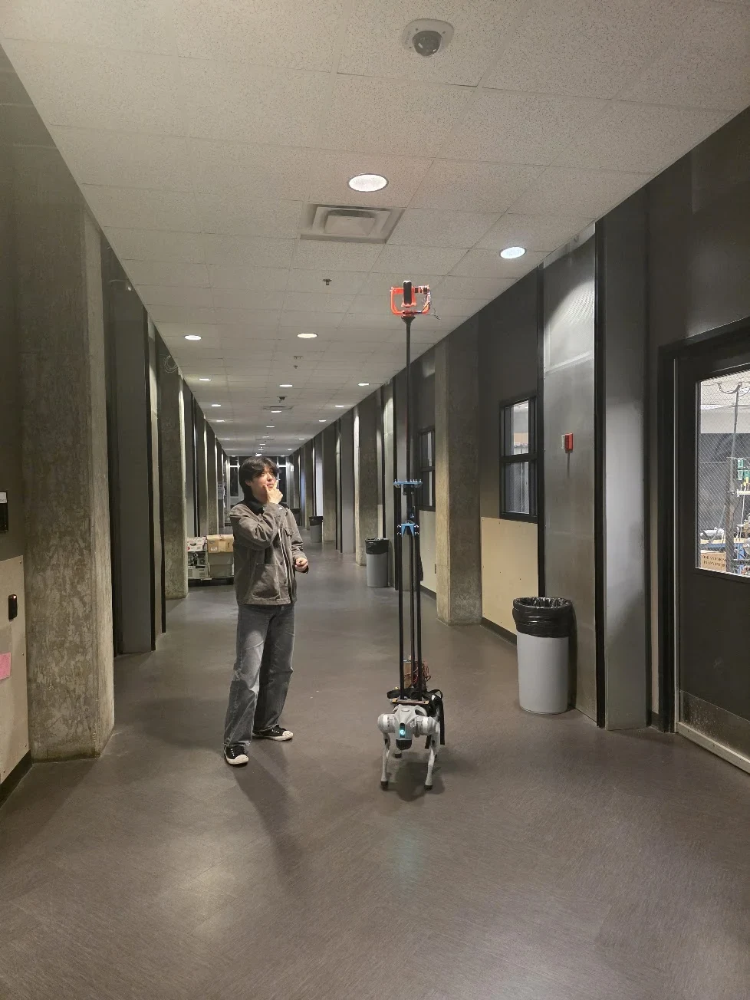
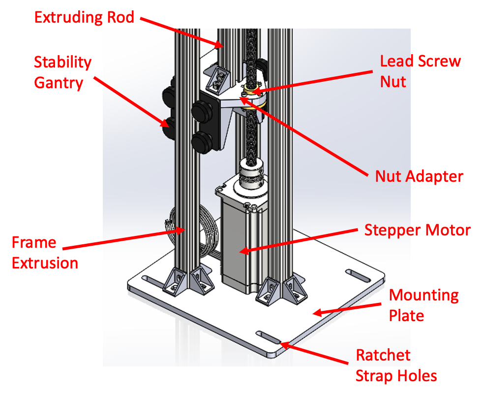
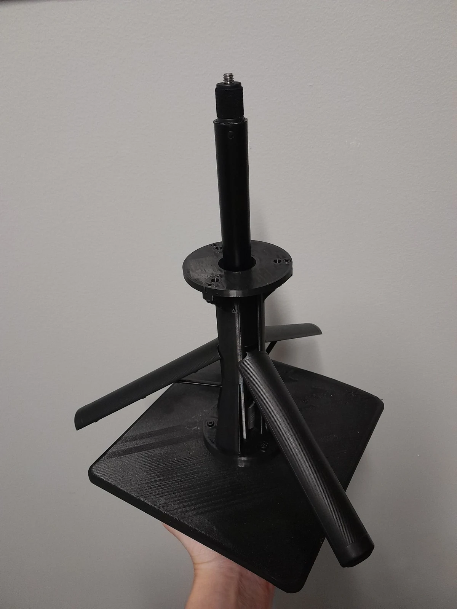
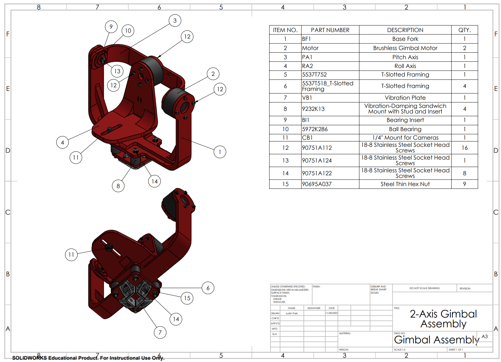
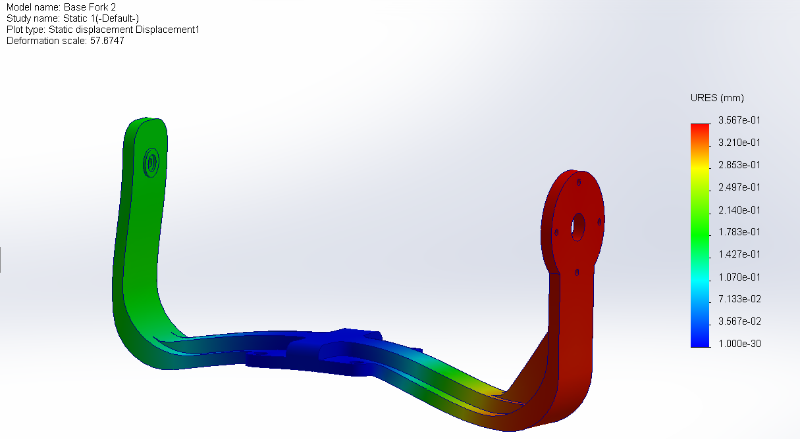
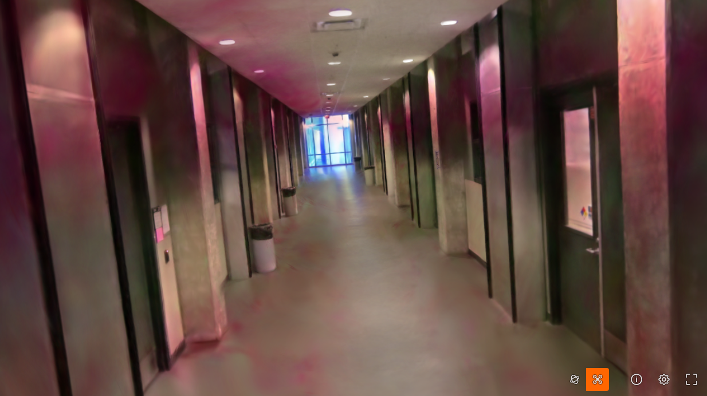
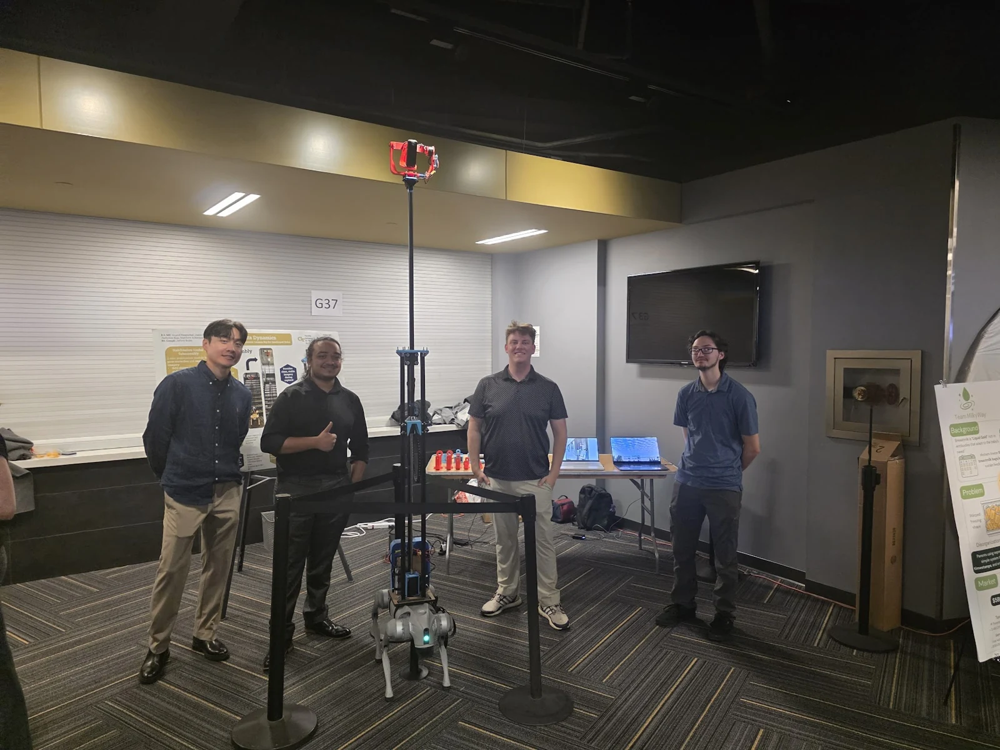

Stabilized camera rig
A height-adjustable camera payload for a quadruped robot · Georgia Tech capstone


Overview
Our Georgia Tech capstone team built a height-adjustable, two-axis camera payload for a teleoperated Unitree Go2 Pro to collect indoor imagery for 3D reconstruction.
I contributed to requirements and concept selection, carried out structural analysis, and developed the gimbal CAD and drawings with attention to camera balance and mounting interfaces. Teammates led mast design and testing/integration. Together, we produced a usable 3D reconstruction.
Design and prototype







Team test notes
- Mast extension took approximately 40–60 seconds, exceeding the under-30-second target.
- Vibration and camera-occlusion artifacts remained. The final rig could not climb stairs.
- Environmental and fatigue requirements were not tested.